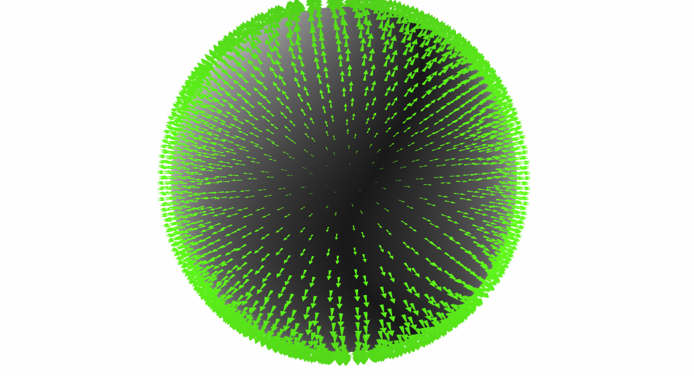

This page describes how to display a vector fields with Cassiopee.
If you don't have a file to manipulate, try this sample file:
[tryVector.cgns].
Open the file by typing: cassiopee tryVector.cgns.
Open the Visu::tkView applet by right clicking on the Visu icon and selecting tkView.
Finally choose "Vector" for the display mode instead of "Mesh".
Choose "Vector arrows" for vector style.
Reduce the size of arrows, by moving the first slider.
- The widget "Style" enables to choose the style for rendering vectors. They can be dispayed as
lines or arrows. For lines, the tail of vector is white and the head is colored by
the vector norm. Arrows are also colored by the vector norm. The colormap used
is the one of the Scalar mode.
- The second row enables to define the scale of vectors, that is the length of lines or arrows.
- The third row enables to define the density of vectors. When set to zero, every mesh element
will emit a vector. When non null, you can display less or more vectors than the number of mesh cells.
- The following rows are used to define the variables used for vectors.
- Finally a set of options is available. If you select "Normalize", normalized vectors will be displayed.
When using the "Vector arrows" style, you can also toggle the surface and eventually project the vector on the mesh surface.

Example of view using arrows.